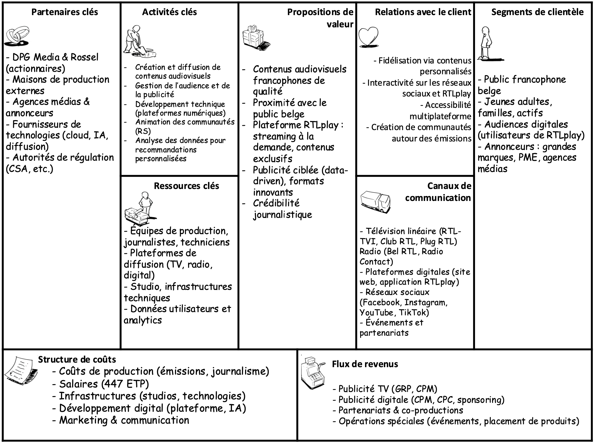

Statuts de l’entreprise
RTL Belgium SA est une société anonyme de droit belge, constituée en 1985 et enregistrée sous le numéro d’entreprise
BE 0428.201.847. Son siège social est établi à Avenue Jacques Georgin 2, 1030 Bruxelles.
En tant que société anonyme, elle dispose d’une personnalité juridique propre et son capital est divisé en actions,
ce qui permet une certaine flexibilité en matière d’actionnariat.
Depuis le rachat en 2022, RTL Belgium est détenue à parts égales (50/50) par deux groupes de presse majeurs :
DPG Media, acteur flamand de premier plan, et Rossel, éditeur du journal Le Soir
et acteur francophone majeur. Cette structure capitalistique reflète une volonté de consolidation du paysage médiatique belge.
RTL Belgium exerce ses activités dans le secteur audiovisuel privé, notamment à travers des chaînes de télévision
(RTL-TVI, Plug RTL) et des stations de radio (Bel RTL, Radio Contact, CONTACT MAX).
L’entreprise emploie environ 447 équivalents temps plein (ETP),
ce qui reflète une structure de taille significative, mobilisant des compétences variées dans les domaines du journalisme,
de la production, de la technique et du digital.
Elle opère dans le respect du Code des sociétés et associations (CSA) ainsi que des réglementations spécifiques au secteur des médias en Belgique.
Mission, vision et valeurs
Mission
RTL Belgium a pour mission de produire et diffuser des contenus médiatiques francophones de qualité, qui informent, divertissent et reflètent les réalités de la société belge.
À travers ses chaînes de télévision, radios et plateformes digitales, l’entreprise s’engage à répondre aux attentes d’un public large et diversifié, tout en respectant les principes fondamentaux du journalisme.
Vision
D’ici cinq ans, RTL Belgium ambitionne de devenir le premier choix audiovisuel en Belgique francophone, en consolidant sa présence sur l’ensemble des canaux (TV, radio, digital)
et en proposant une expérience média personnalisée, interactive et accessible sur tous les supports.
Valeurs
- Intégrité journalistique : garantir une information fiable, vérifiée et indépendante.
- Proximité avec le public : rester à l’écoute des attentes de la population belge francophone.
- Excellence technologique : investir dans des outils modernes pour assurer une diffusion de qualité.
- Responsabilité sociale : promouvoir la diversité, l’inclusion et des pratiques durables.
- Innovation continue : anticiper les évolutions du secteur et développer de nouveaux formats.
Innovation
RTL Belgium déploie une stratégie d’innovation transversale, qui touche à la fois les produits, les processus, le marketing et l’organisation.
Cette approche s’inscrit dans une volonté d’adaptation continue aux mutations technologiques et aux attentes du public belge francophone.
-
Innovation de produit : le lancement de RTLplay, plateforme de streaming en ligne, marque un virage stratégique vers la consommation à la demande,
avec une interface moderne, une accessibilité multi-écrans et des contenus exclusifs.
-
Innovation de marketing : l’entreprise intègre l’intelligence artificielle pour proposer des contenus personnalisés,
améliorer les recommandations utilisateurs et renforcer l’engagement sur ses plateformes digitales.
-
Innovation de procédé : RTL Belgium a adopté des technologies cloud pour la diffusion de ses contenus,
assurant ainsi une plus grande flexibilité, une meilleure résilience technique et une capacité d’adaptation rapide aux pics d’audience.
-
Innovation organisationnelle : l’organisation interne a évolué vers une logique agile,
favorisant la collaboration interdisciplinaire, la réactivité et l’autonomie des équipes face aux évolutions rapides du marché.
Ces différentes formes d’innovation s’alignent sur les critères définis par l’Union européenne en matière de capacité d’innovation,
et positionnent RTL Belgium comme un acteur dynamique au sein de l’écosystème audiovisuel.
Concurrence – Analyse selon les 5 forces de Porter
RTL Belgium évolue dans un environnement concurrentiel complexe et en mutation rapide.
Une analyse selon le modèle des cinq forces de Porter permet de mieux comprendre les défis stratégiques auxquels l’entreprise est confrontée :
-
Rivalité entre les concurrents existants :
La rivalité sectorielle est particulièrement intense. RTL Belgium doit faire face à la RTBF, service public fortement subventionné,
et à TF1, chaîne française bien implantée en Belgique. Ces acteurs se disputent les parts d’audience et les investissements publicitaires,
rendant le marché très compétitif.
-
Pouvoir de négociation des clients (annonceurs) :
Les annonceurs disposent d’un pouvoir de négociation élevé, notamment les grandes agences médias,
qui peuvent comparer les offres entre chaînes et plateformes. La pression sur les tarifs publicitaires incite RTL Belgium à innover dans ses formats
et à offrir des solutions publicitaires personnalisées (data-driven, ciblage, etc.).
-
Menace des produits de substitution :
La montée en puissance des plateformes Netflix, YouTube, TikTok ou Spotify constitue une menace majeure.
Ces services offrent des contenus à la demande, souvent sans publicité, captant l’attention et les budgets du public cible, notamment chez les jeunes.
-
Menace de nouveaux entrants :
Le seuil d’entrée technologique a fortement baissé, permettant l’émergence d’acteurs alternatifs comme les
influenceurs, les chaînes YouTube, les podcasts ou les médias 100 % digitaux.
Ces nouveaux entrants fragmentent l’audience et imposent de nouveaux codes de production.
-
Pouvoir de négociation des fournisseurs :
Dans le secteur audiovisuel, ce pouvoir est modéré mais réel : il peut concerner les fournisseurs de contenus (maisons de production)
ou de technologies (solutions cloud, diffusion, analytics). RTL Belgium limite cette dépendance en intégrant une partie de la production
et en diversifiant ses partenariats technologiques.
Conclusion : malgré une forte pression concurrentielle, RTL Belgium bénéficie d’un
positionnement avantageux, combinant une présence historique en télévision,
une forte audience digitale via RTLplay, et un ancrage local qui renforce sa légitimité auprès du public et des annonceurs.
Segmentation, ciblage, positionnement et différenciation
Segmentation
RTL Belgium segmente son audience principalement selon deux axes :
- Démographique : en s’adressant à la fois aux jeunes adultes, aux familles et aux actifs, avec des offres adaptées à chaque tranche d’âge.
- Comportemental : en tenant compte des habitudes de consommation médiatique : télévision linéaire traditionnelle, plateformes de streaming (RTLplay), radio ou contenus mobiles.
Ciblage
L’entreprise cible prioritairement les consommateurs francophones belges actifs sur le digital, à la recherche de contenus à la fois accessibles, fiables et proches de leur quotidien.
Ce public est friand d’actualités, de divertissement local et de formats courts, ce qui justifie l’accent mis sur les plateformes numériques.
Positionnement
RTL Belgium se positionne comme un média généraliste, fiable et ancré localement, combinant le professionnalisme journalistique à une offre diversifiée de divertissement.
Elle entend être perçue comme une marque de confiance, accessible sur tous les supports, et capable d’accompagner les évolutions des usages médias.
Différenciation
La stratégie de différenciation repose sur plusieurs leviers clés :
- Contenus produits localement, ancrés dans la réalité belge francophone.
- Animateurs et journalistes reconnus, qui incarnent la proximité avec le public.
- Intégration multisupport fluide (TV, radio, web, application mobile), assurant une continuité de l’expérience utilisateur.
- Innovation technologique soutenue (recommandations personnalisées, formats interactifs, analyse des données d’audience).
Politique de prix
Le modèle économique de RTL Belgium repose principalement sur une stratégie publicitaire multicanal,
combinant les revenus issus de la télévision linéaire et ceux des plateformes digitales.
À cela s’ajoutent des partenariats commerciaux ponctuels (sponsoring, co-productions, contenus de marque).
Les tarifs publicitaires sont établis selon des modèles de tarification reconnus dans le secteur :
- En télévision, les prix sont indexés sur l’audience mesurée (GRP, coût pour mille - CPM).
- En digital, les campagnes peuvent être facturées au CPM (coût pour mille impressions) ou au CPC (coût par clic), selon les objectifs des annonceurs (visibilité, engagement, conversion).
RTL Belgium propose une offre modulable et différenciée, adaptée aux besoins variés des annonceurs :
- Formats classiques : spots TV, bannières, pre-rolls
- Formats natifs : native ads, contenus sponsorisés intégrés dans les flux
- Opérations spéciales : partenariats événementiels, placement de produit, sponsoring d’émissions
Cette souplesse tarifaire et formatique permet à RTL Belgium de toucher aussi bien les grandes marques que les annonceurs locaux,
tout en optimisant ses revenus publicitaires selon les canaux et les audiences ciblées.
Diagnostic financier 2023
üîó
Consulter les comptes annuels 2023 complets de RTL Belgium (PDF)
Le diagnostic financier de RTL Belgium pour l’exercice clôturé au 31 décembre 2023, fondé sur le document officiel "Fiche 5 – Annexe 1 – Bilans et Comptes", révèle une situation économique solide mais contrastée dans ses dynamiques internes.
- Structure bilantaire :
L’actif total s’élève à 310,2 millions d’euros, dominé par des immobilisations financières (184,9 M€) et incorporelles (87 M€), témoignant d’investissements stratégiques importants, notamment en goodwill. Cette forte capitalisation suggère un positionnement consolidé dans le paysage audiovisuel belge.
- Liquidité et trésorerie :
Les valeurs disponibles (2,27 M€) restent modestes par rapport à l’ensemble des créances à court terme (77,5 M€). Cela indique une faible trésorerie immédiate mais une bonne solvabilité à court terme via les créances.
- Capitaux propres :
Les fonds propres s’établissent à 157,4 millions d’euros, assurant une structure de financement robuste. Cela renforce la capacité de l’entreprise à autofinancer ses projets et à absorber des chocs économiques éventuels.
- Endettement :
RTL Belgium affiche une dette totale de 137,8 millions d’euros, dont 76,8 M€ à long terme. Bien que significatif, ce niveau reste maîtrisé au regard du total bilan, avec un ratio d’endettement inférieur à 50 %.
- Résultats financiers :
Le chiffre d’affaires atteint 229,6 millions d’euros. Le résultat d’exploitation est positif à 2,2 millions d’euros, traduisant une gestion opérationnelle efficace. Le résultat net affiché de 18,7 millions d’euros est principalement dû à des revenus exceptionnels liés à la fusion et non à la seule activité courante.
- Distribution du bénéfice :
Sur le bénéfice net, 31 M€ sont distribués, tandis que 116,8 M€ sont reportés. Cette politique démontre un équilibre entre redistribution aux actionnaires et capitalisation pour l’avenir.
Conclusion : RTL Belgium démontre en 2023 une forte solidité financière avec une structure capitalistique équilibrée, une maîtrise de l’exploitation et un levier modéré. Néanmoins, une attention particulière doit être portée à la faible trésorerie disponible et à la dépendance au goodwill, reflet des opérations de fusion. L’entreprise conserve une bonne marge de manœuvre stratégique grâce à ses capitaux propres élevés et à sa rentabilité nette exceptionnelle cette année.
Analyse SWOT
| Forces |
Faiblesses |
- Marque historique et reconnue en Belgique francophone
- Écosystème multiplateforme (TV, radio, digital)
- Production locale de contenus adaptés aux réalités culturelles
- Capacité d’innovation continue (technologies, formats, IA)
|
- Dépendance aux revenus publicitaires
- Audience traditionnelle vieillissante sur les canaux linéaires
|
| Opportunités |
Menaces |
- Croissance du streaming à la demande (RTLplay)
- Monétisation par valorisation des données d’audience
- Potentiel d’alliances stratégiques dans l’écosystème média-tech
|
- Concurrence accrue des plateformes mondiales (Netflix, YouTube…)
- Risque lié à l’évolution rapide des technologies
- Fragmentation des publics et complexité de fidélisation
|
Business Model Canvas
